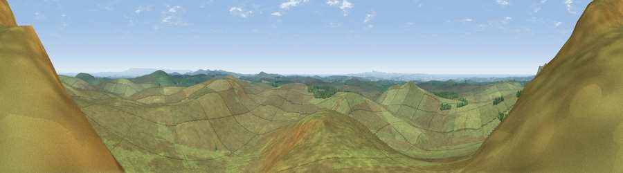

Viewpoint c1582_4317
#7029 in England · top 15% of its area beats it · —Where it is
The exact computed spot (SX 15925 79375). Click the marker for map links.
The view, rendered

A 360° render of this exact spot computed from the terrain model, tree cover and land cover — summer colours, afternoon light, calibrated against photographs of famous viewpoints. Real trees, hedges and buildings will differ in detail.
The panorama
Grey silhouette: terrain skyline in each direction (720 bearings, Earth curvature and refraction included). Dashed green: skyline with trees (+15 m) and buildings (+8 m) as obstacles. Blue strip: how far the ground is visible on each bearing.
Where the view opens
Wedge length = distance to the farthest visible ground on that bearing (vegetation-aware). Rings at 10, 25 and 50 km.
What fills the view
97% grassland · 2% woodland ·
Angular shares of the visible panorama (visual magnitude), not map area. Landscape diversity 0.07 (0–1 Shannon).
Key numbers
More beautiful places nearby
The staircase of upgrades: each row has a higher view potential than everything closer. Driving times are estimates from straight-line distance, calibrated against real road routing — check an actual route before setting out.
| Place | Direction | Drive | Score |
|---|---|---|---|
| Brown Willy | N · 1 km | ~2 min | 77.3 |
| Viewpoint near Lesnewth | NNW · 11 km | ~21 min | 78.1 |
| Viewpoint near Lesnewth | NNW · 12 km | ~22 min | 82.6 |
| Viewpoint near Boscastle | NW · 12 km | ~23 min | 85.2 |
| Viewpoint near Boscastle | NNW · 14 km | ~26 min | 85.8 |
| Viewpoint near Lesnewth | NNW · 14 km | ~26 min | 87.7 |
| Viewpoint near Crackington Haven | NNW · 15 km | ~27 min | 88.1 |
| Viewpoint near Combe Martin | NNE · 81 km | ~105 min | 88.9 |
50.58502, -4.60162 · source: screening · position refined by local search. Computed location — check access rights before visiting.